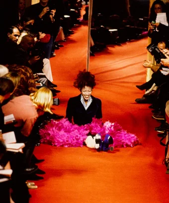
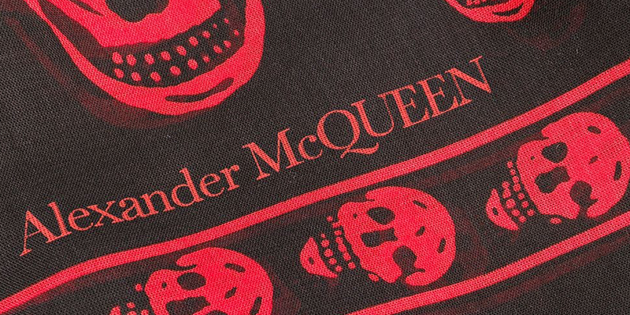
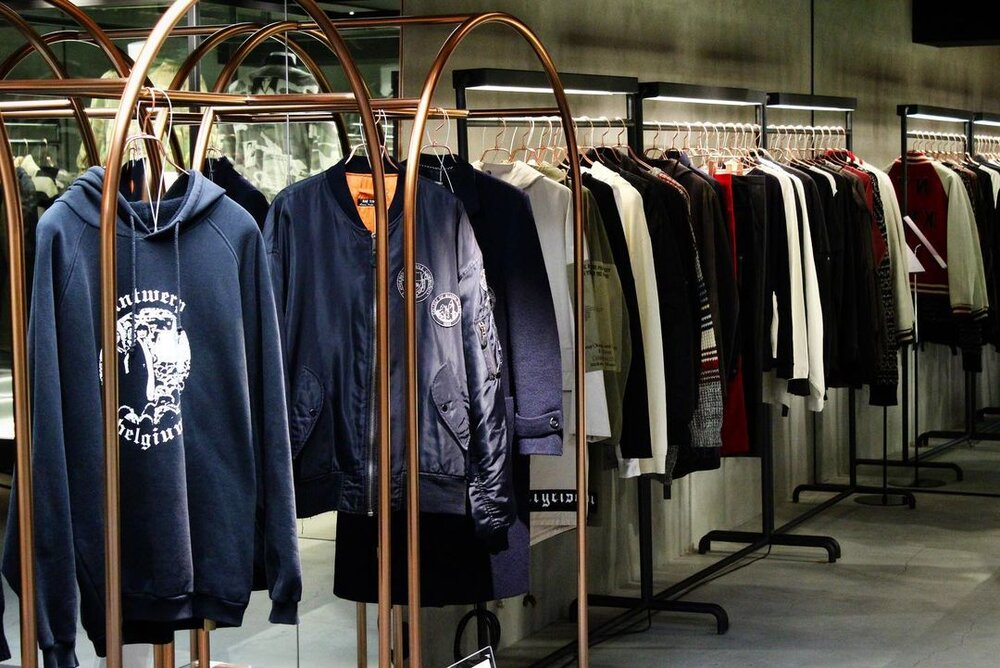

Fashion Archive
Definition
Products
Recomandation sources
Recomandations
A New Generation Of Fashion Archivists

An Introduction to Archival Fashion

INSIDE TOKYO'S ARCHIVE FASHION VAULT: MEET THE ARCHIVE STORE
